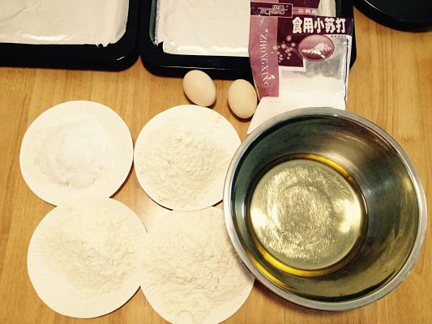
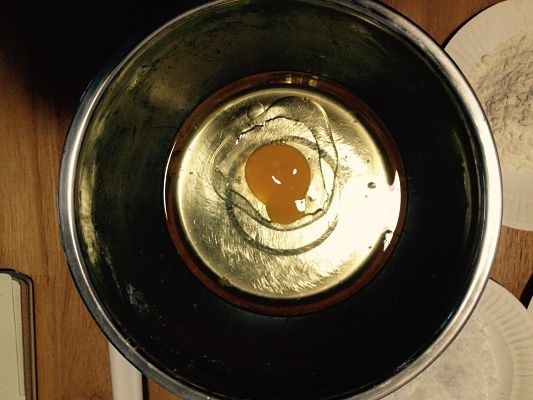
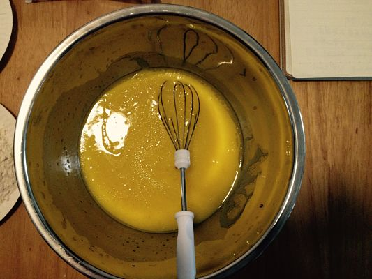
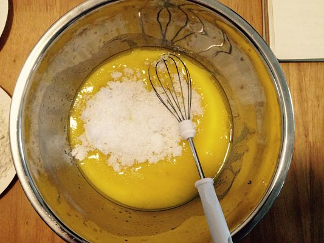
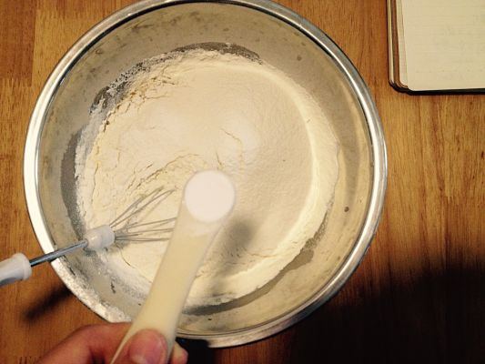
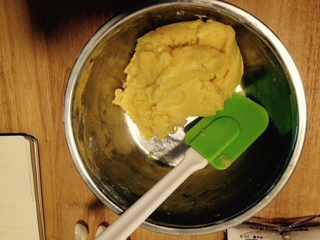
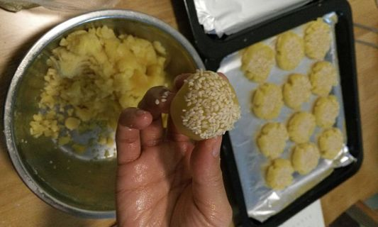
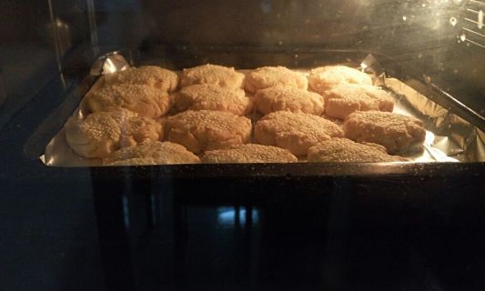
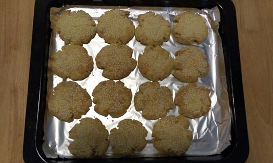
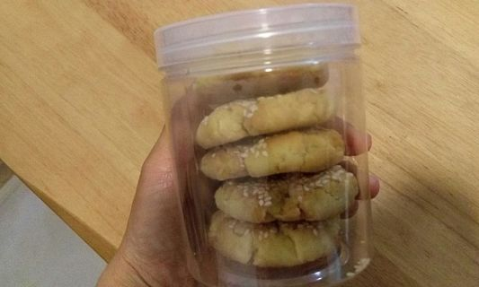

白粥的最佳拍档~桃酥！！有木有~~
用料
- 普通面粉 250克
- 植物油 100克
- 白糖 60克
- 小苏打 2克
- 鸡蛋 1个
- 芝麻 适量
做法
1. 准备材料
称量准备好所有材料，喜欢甜的可以用100克白糖。

2. 混合步骤
将鸡蛋打入植物油中。

打散即可，注意力度，不要上劲。

放入白糖，搅拌均匀。

筛入面粉、小苏打。

用刮刀翻拌，不要使劲的揉面（也可以准备适量核桃碎、花生碎放进去）。

3. 桃酥塑形
取25克左右的小面团，在掌心揉成圆形，然后沾上芝麻放到烤盘上压扁。

4. 烘焙阶段
烤箱预热200度，中上层15分钟，桃酥上色稍微深一点就可以了。


5. 赤裸炫耀
